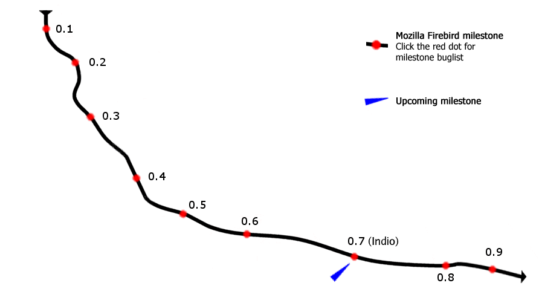

Mozilla Firebird Roadmap
This document attempts to explain the development goals for the Mozilla Firebird project and to map those goals against milestone binary releases. It is not intended to be a definitive release schedule for users of Mozilla Firebird binaries but rather a development roadmap and calendar to help keep the Mozilla Firebird hackers all on the same page.
We use Bugzilla to track the features and bug fixes that should happen before a milestone is released so a query for Mozilla Firebird bugs targeted at a particular milestone should give you an idea about what we expect to be fixed by that milestone.
The Trip

The Timeline
Because we're working from the stable base provided by the mature Mozilla trunk we expect to move through these milestone releases at a fairly quick pace. That being said, these dates are subject to change. So if your business depends on the Mozilla Firebird milestone plan you are encouraged to contact asa@mozilla.org directly for more information.
Dates given are just targets. Actual release will probably occur sometime during the week of the given day. Update: Because of the major changes in the Mozilla Development Roadmap, the target dates of this roadmap may not be completely accurate.
Phoenix 0.1 - September 23, 2002Phoenix 0.2 - October 1, 2002Phoenix 0.3 - October 14, 2002Phoenix 0.4 - October 21, 2002Phoenix 0.5 - NovemberMozilla Firebird 0.6 - May 16th, 2003- Mozilla Firebird 0.7 - July?
Initial release introducing customizable toolbars, simple new interface, performance and size improvements, and lots of destruction.
Improvements to toolbar customization, inline web form autocomplete, sidebar, extensions management, making preferences work (somewhat), more size improvements and bug fixing.
A few more features, global Go menu, improvements to pop-up blocking, tabbed browsing improvements, redesign of bookmark groups, more speed and size improvements and lots of bug fixing.
Shifting from features to bug fixing and polish. Plans to leverage the Mozilla 1.2 stability push to make Phoenix rock solid.
Polish and cleanup. Lots of bug fixing.
Redesigned Preferences window, new default theme, smooth scrolling, automatic image resizing, and much more.
We'd like to get an 0.7 out sometime pretty quickly on the heels of 0.6 and before mozilla.org adopts Mozilla Firebird as their premier app. See the Mozilla Development Roadmap for more information.